この説明書は、Tacpendium の画面ごとの使い方をまとめたものです。インストールや起動の手順、スマホからつなぐ方法、うまくつながらないときの対処は、配布物に同梱の README.txt にあります。
モダン操作で遊んでいる方も、キャラクター・技・フレームのデータはそのまま参照できます。ただし、レシピに並ぶコマンドはクラシックの表記であり、そのまま入力しても同じ技が出るとは限りません。
Tacpendium をいちばん最初に開いたときだけ出てくる画面です。言語・よく使うキャラクター・技の名前の出しかた・ほかの機器から使うかどうかを、あとで迷わないように最初にまとめて決めておくためにあります。
ここで決めたことはすべて設定画面からあとで変えられます。決めきれない項目は、そのまま次へ進んでかまいません。
アプリを初めて起動したときに自動で開きます。全部で 8 段ありますが、ほかの機器から使わない選択をすると 6 段で終わります（機器から使うための 2 段が省かれるためです）。
最後まで進むとコンボ一覧へ移ります。以降この画面は出ません。もう一度設定を見直したいときは、ヘッダの設定から同じ項目に行けます。
パスワードは決めなくても先に進めます。ただし決めずに進む段では、「パスワードなしで進む」ことに同意するチェックを入れるまで確定ボタンが押せません。読まずに押し進めてしまうのを防ぐためです。段を戻ってやり直すと、このチェックは外れた状態に戻ります。
パスワードの入力欄は最初から文字が見える状態です。伏せ字にも切り替えられます。ここで打ち間違えると、あとで設定ファイルを直接開いて消す作業が必要になってしまうため、見えるほうを既定にしています。
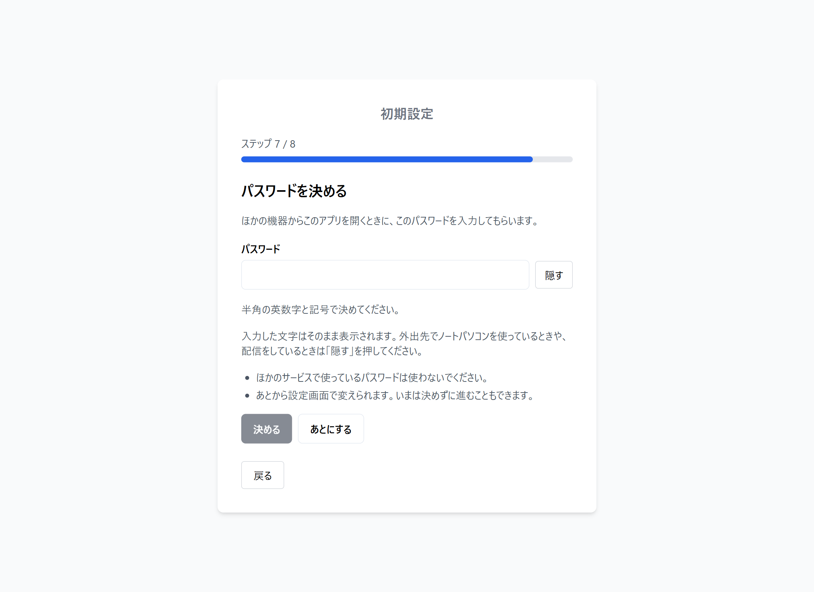
1 台の PC を家族や友人と一緒に使うときに、いま誰として操作しているかを決める画面です。
選んだ人によって変わるのはタグとプリセットだけです。コンボとセットプレイは誰のものでもなく、全員で 1 つのものを共有します。「自分のコンボ」という区別を作らず、みんなで 1 冊のノートを育てる形にしてあります。
利用者が 2 人以上登録されているとき、アプリを開いた直後に出ます。1 人しか居ないときは出ません。
選ぶとコンボ一覧（スマートフォンではホーム）へ進みます。あとから選び直したいときは、画面上部の共通ヘッダに出ている利用者名から切り替えます。ブラウザの「戻る」でこの画面へ戻ることはできません。
設定の「ユーザー」から行います。この画面では増やせません。画面を再読み込みすると、この画面へ戻ります。選んだ人を保存していないためで、不具合ではありません。もう一度選び直してください。
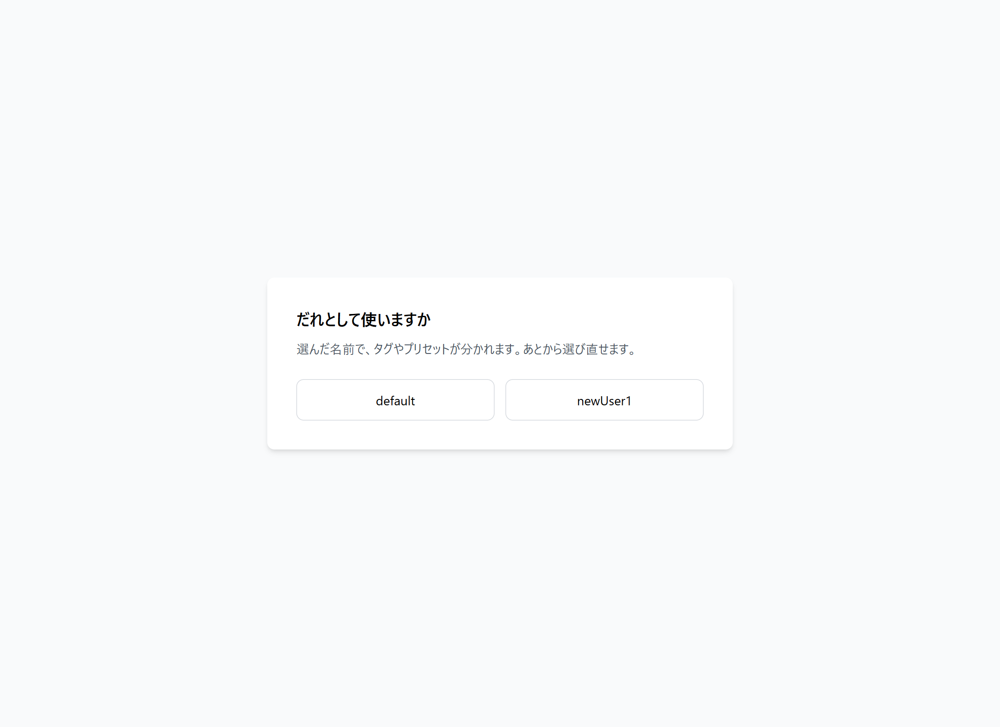
初回起動ウィザードで決めたことをあとから変えるための画面です。あわせて、ほかの機器から使うための準備と、データがどこに保存されているかの確認もここで行います。
「決めたあとに触らない設定」ではなく、スマートフォンからつなぐたびに開く画面だと考えてください。接続用の QR コードはここにあります。
共通ヘッダの設定から開きます（スマートフォンではホームのボタンからも行けます）。プリセット一覧へのリンクもこの画面の中にあります。
PC では各セクションが横に並び、スマートフォンでは折りたたみになります。Windows では通知領域（タスクトレイ）にアイコンが常駐しているので、そこを右クリックして「設定画面をブラウザで開く」を選ぶと、QR コードを開いた状態でこの画面が出ます。
config.toml の [security] にある有効化のフラグと保存されている値の 2 行を、どちらも消してアプリを起動し直します。片方だけ消しても新しいパスワードを決め直せません。この案内はログインの画面にも置いてあります。
QR コードのボタンは、ほかの機器から使う設定が無効のあいだ「押せない状態」ではなく、そもそも出ません。見当たらないときは、同じ「ネットワーク」の切り替えが無効になっていないか確かめてください。
表示されるアドレスは代表の 1 件だけです。PC が複数のネットワークにつながっている場合、スマートフォンから届かないアドレスが表示されることがあります。うまくつながらないときの手順は、配布物に同梱の README.txt にまとまっています。
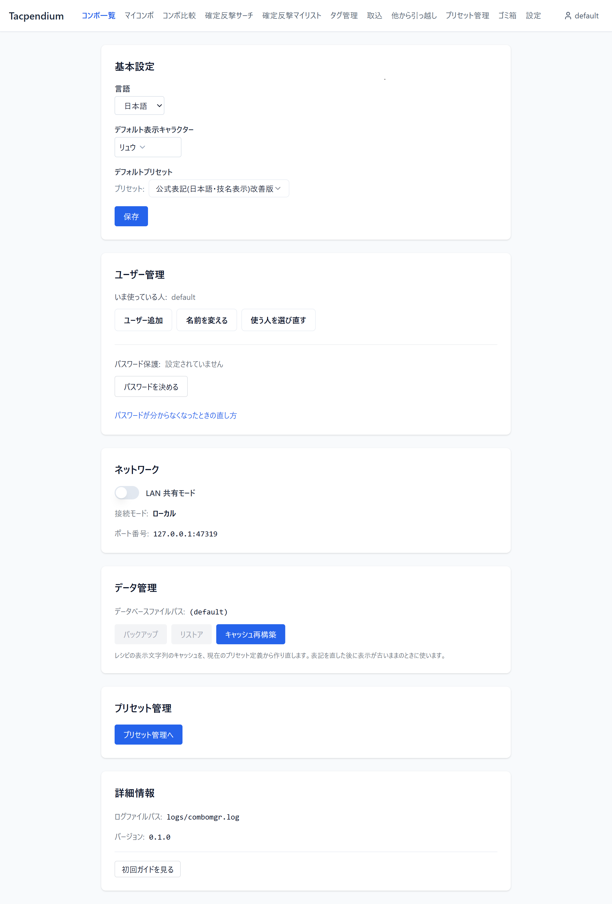
ほかの機器から使う設定にしていて、かつパスワードを決めているときだけ出る入口です。同じネットワークに入れる人すべてが対象になってしまうので、そこへもう 1 枚だけ扉を置くためにあります。
パスワードを決めていなければ、この画面は出ません。
この画面には固有のアドレスがありません。必要になった時点でその場に出ます。入り終えると、以降は「戻る」「進む」でもこの画面へは戻りません。
入ったあとは、利用者が 2 人以上ならユーザー選択へ、1 人ならコンボ一覧（スマートフォンではホーム）へ進みます。
失敗しても、何が悪かったかは表示されません。「合っていない」とだけ出ます。どこまで合っているかを外から測れないようにするためで、不親切にしているわけではありません。エラーは入力欄のそばに出て、画面は切り替わりません。
入力欄は伏せ字が既定です（初回起動ウィザードでパスワードを決めるときは逆に、最初から見える状態になっています）。ここは友人が隣に居るときや、画面を配信しているときに打つ場面を想定しているためです。
config.toml の [security] にある 2 行をどちらも消してアプリを起動し直します。アプリの中から戻す手段は用意していません。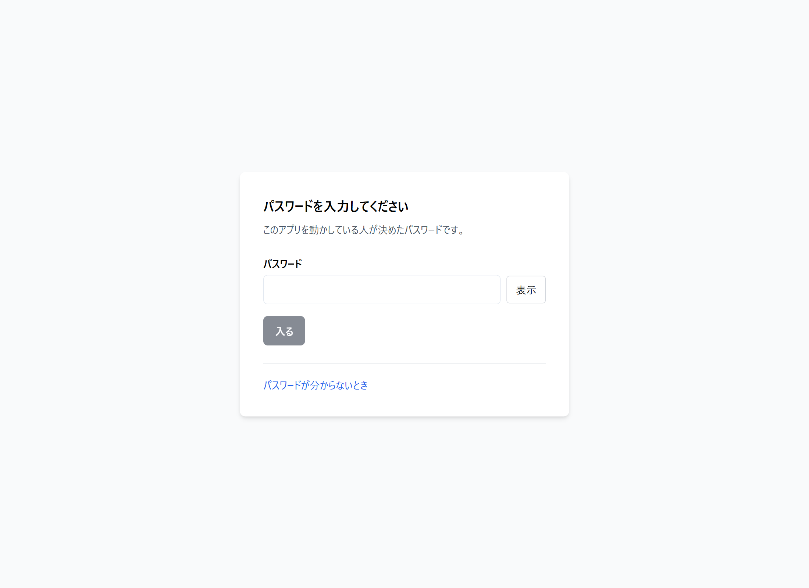
登録したコンボをぜんぶ並べて、目当ての 1 本を見つけ出すための画面です。本アプリの入口であり、ここから登録・詳細・比較・書き出しへ広がります。
「記録した数が増えるほど探せなくなる」のを避けるため、絞り込みと並べ替えを厚くしてあります。
PC ではアプリを開くと最初に出ます（スマートフォンではホームのボタンから）。共通ヘッダのコンボ一覧からいつでも戻れます。
絞り込みと並び順を覚えているのは、詳細や編集へ寄り道して戻ってきたときだけです。アプリを開き直すと既定に戻ります。また、覚えるのはこのコンボ一覧だけで、マイコンボは対象外です。
成立条件の「成立」「不成立」「未検証」は互いに排他ではありません。画面端では成立し画面中央では不成立、というコンボは両方に出ます。また「未検証」は「埋め残しがある」という意味であり、「まったく手つかず」とは限りません。セットプレイを 1 つも持たないコンボは、3 つのどれにも出ません。
「持続当て（始動技）」の絞り込みは「全て」「持続当て（始動技）」「通常始動」の 3 つから選びます。「全て」のあいだは両方が出ます。表の列は増えていません——絞り込みだけです。
レシピの中の修飾（ディレイ・目押しなど）は技の左側に小さな札で出ます。波括弧の書きかたが無くなったわけではありません——マウスを載せたときの表示・エクスポート・コピーは、今までどおり {目押し} のような波括弧付きの文字のままです。
設定の「データ」にある「キャッシュ再構築」を一度だけ押してください。押すまでのあいだ、古い行は波括弧付きの文字のまま残ります。レシピを縦に並べて読む切り替え（「レシピを縦に表示」）はアプリ全体で 1 つです。一覧で切り替えると、詳細・比較・マイコンボの表示もまとめて変わります。
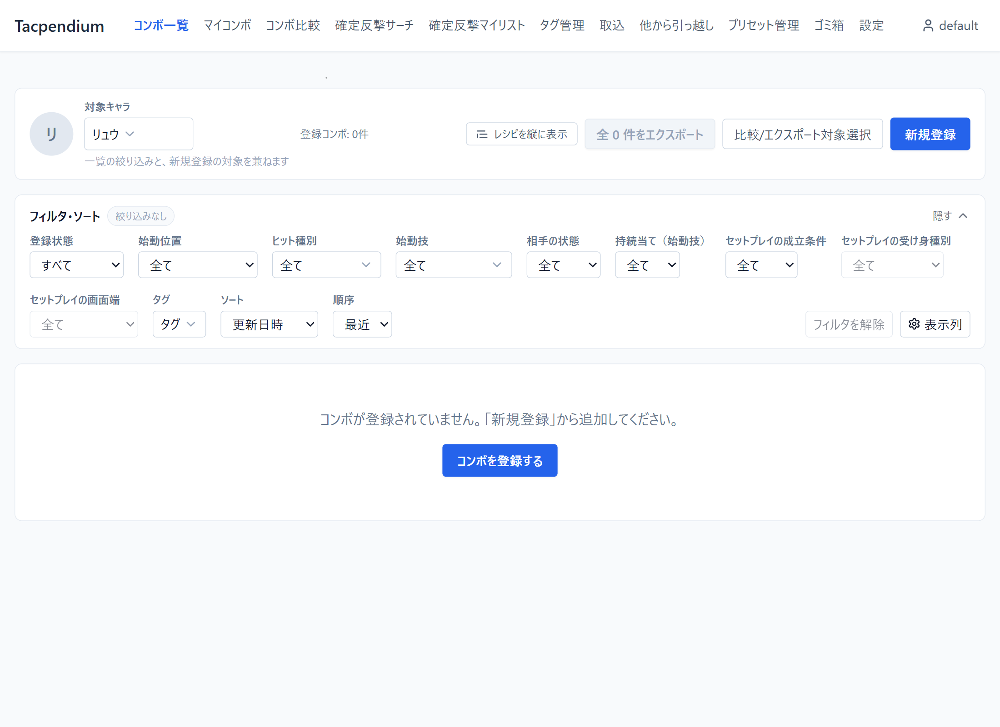
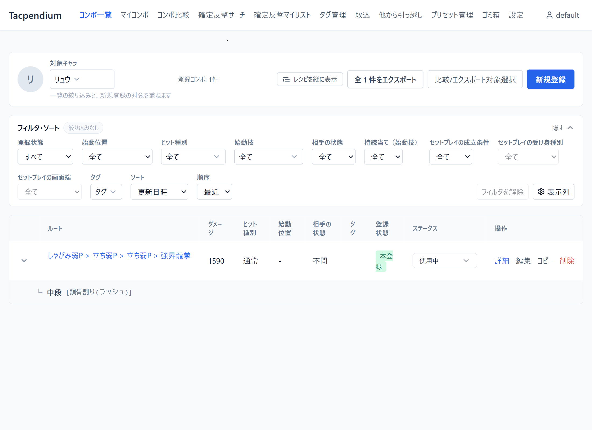
記録したコンボのうち、いま自分が実際に使っているものだけを取り出して見る画面です。コンボ一覧が「棚にある全部」なら、マイコンボは「いま手に取る分」です。
状態は使用中／練習中／頻度低下の 3 つです。試合で使う前に「使用中」だけを見返す、練習の前に「練習中」だけを出す、といった使いかたを想定しています。
共通ヘッダのマイコンボから開きます（スマートフォンではホームのボタンからも）。行を押すとコンボ詳細へ、行末の操作からコンボ登録・編集へ進みます。
コンボをどの状態にするかはコンボ登録・編集の「その他情報」で決めます。この画面からは切り替えません。
表はコンボ一覧と同じ部品を共有しています。そのため列の出し入れの設定も共通です。コンボ一覧で列を消すと、こちらからも消えます。
マイコンボの状態はタグのしくみを使って記録しています。タグは利用者ごとに分かれるため、利用者を切り替えると別の顔ぶれになります。コンボそのものは全員で共有しているので、「コンボは見えるのにマイコンボに入っていない」という状態は正常です。
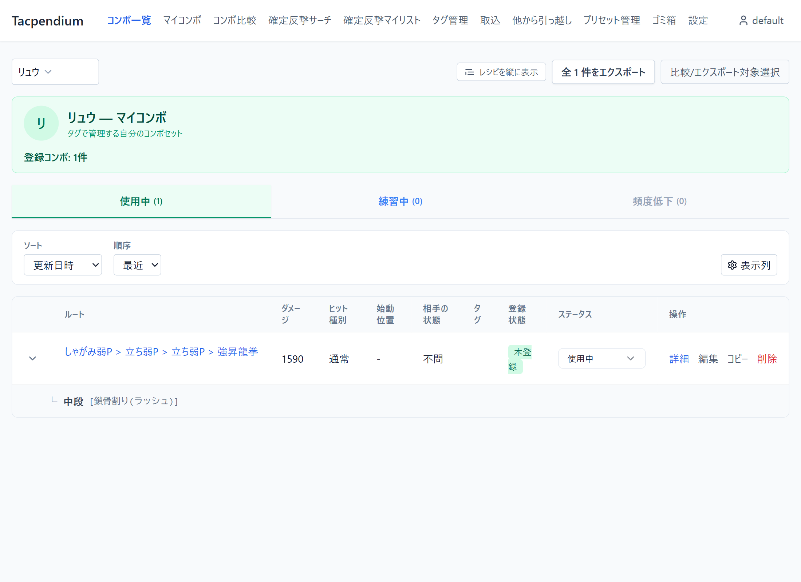
1 本のコンボについて記録したことを全部まとめて読む場所です。ダメージやゲージだけでなく、そのあと起き攻めへつなげられるか、どのセットプレイと組めるかまで、ここで確かめられます。
一覧は「探すため」、詳細は「使えるかどうかを判断するため」の画面です。
コンボ一覧・マイコンボ・コンボ比較から、行のルートを押して開きます。
画面内の「戻る」は、来た道があればそこへ戻り、無ければコンボ一覧へ落ちます。ただし保存した直後にここへ来たときだけは、来た道をたどらずコンボ一覧へ行きます（編集中のフォームへ入り直してしまわないためです）。
状況の欄には「持続当て（始動技）」も並びます。始動技を持続当てしたかどうかで、レシピの途中の技に付ける修飾の「持続当て」とは別の項目です。
同じ状況の欄で、始動位置は80 マス (50%)のようにマス数とパーセントを並べて出ます。運び量は「状況」ではなくメタデータの欄に出ます——始動位置とは別の値で、コンボがどれだけ相手を運んだかを表します。
ドライブダメージの符号に意味があります——マイナスが削り、プラスが回復です。画面には -1 削り +2.5 回復 のように符号と語を並べて出しています。
「コンボ開始時の◯◯ゲージ残量」と「ゲージ消費」は別の項目です。前者は「始めるのに何本必要か」、後者は「このコンボで何本使うか」です。SAゲージ消費・ドライブゲージ消費として別に並びます。
自動提案は出しただけでは何も保存されません。「採用」を押したときに初めてセットプレイとして残ります。「不採用」はその行を一時的に隠すだけで、もう一度検索すると戻ります。起き上がりまでの有利（ノックダウンアドバンテージ）を入れていないコンボでは提案できません。
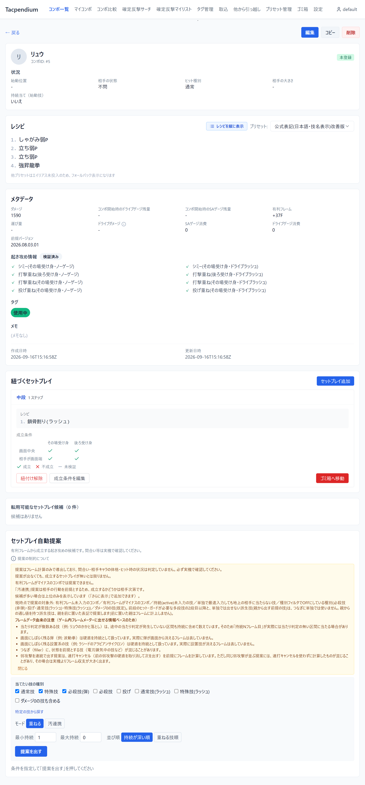

コンボを記録するための画面です。本アプリは「完成したコンボだけを載せる清書帳」ではなく、うろ覚えのものや、まだ試していない机上のアイデアも置いておける手帳を目指しています。
そのためダメージと有利フレームの 2 つを除けば、全部が埋まっていなくても保存できます。この 2 つだけは必須で、空のままだと保存が止まります（仮登録として保存するときは、この 2 つも空のままでかまいません）。ほかの項目は足りなくても保存は止まりません。
コンボ一覧の新規登録ボタン、行末の編集、行末のコピーから開きます。コンボ詳細からも編集・コピーへ行けます。
保存するとコンボ詳細へ移ります。キャンセルは画面のいちばん上といちばん下の両方にあり、長いフォームの途中からでも抜けられます。
始動位置と運び量は、先に「入力方式」を選んでから 1 つの欄に入れます。始動位置は通常入力・パーセンテージ・マス目の 3 つ（最初は通常入力）、運び量はパーセンテージ・マス目の 2 つ（最初はマス目）です。運び量に「通常入力」はありません。通常入力は「自分画面端」「画面中央」「相手画面端」などの区分から選ぶ方式です。どの方式で入れても記録される値は同じで、見えかたの単位が変わるだけです。
範囲の外の数字を打ってもエラーにはならず、いちばん近いところまで戻されます（マス目は 0〜160、パーセンテージは 0〜100）。
始動位置をマス目やパーセンテージで入れているときに、数字を消して欄から離れると、選んである区分の代表的な数字が戻ります。保存したあとで値が生えてきたように見えるのを防ぐためです（通常入力では、区分を選んだ時点で数字が決まります）。運び量には戻りません——運び量には区分の考えかたが無いので、空のままが正常です。
技を選ぶ仮想コントローラは、画面に余裕があるときは左右 2 列になります（左が技のまとまり、右が種類・強度）。まとまりの一覧は高さが決まっていて、その中だけがスクロールします。縦に長くなりすぎないようにするためです。
コントローラやキーボードでも入力できる、という案内は最初の 1 回だけ開いた状態で出ます。2 回目からは畳まれているので、読み返したいときは自分で開いてください（コンボとセットプレイのどちらで開け閉めしても、もう一方にも効きます）。
技ごとに付ける修飾は呼び名がいくつか変わりました——たとえば「低ジャンプ」は「低空」です。ほかに「ノーキャン」「遅らせキャンセル」「高め当て」「低め当て」「空振り」「持続当て」「裏回り」も選べます。何も付けていない技は「キャンセルでつないだ」と読みますので、「キャンセルした」を表す修飾はありません。
入力欄は2 枚のタブに分かれています（画面の広さによらず同じ形です）。保存に失敗したとき、原因がいま見ていないほうのタブにあると、タブの見出しに件数が出ます。エラーの一覧そのものは保存ボタンのすぐ上に出ます。
ドライブダメージはマイナスが削り、プラスが回復です。小数も入れられます（1 本未満の増減を表すためです）。
コピーして開いたあと何も変えずに保存しようとすると、画面の上に「既存のコンボと同じです」という警告が出ます。どこかを変えると消えます。
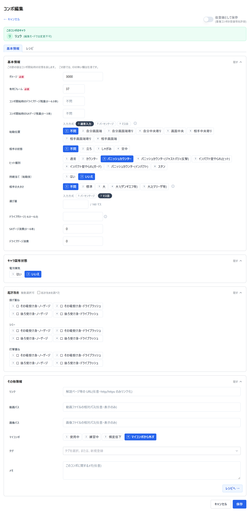
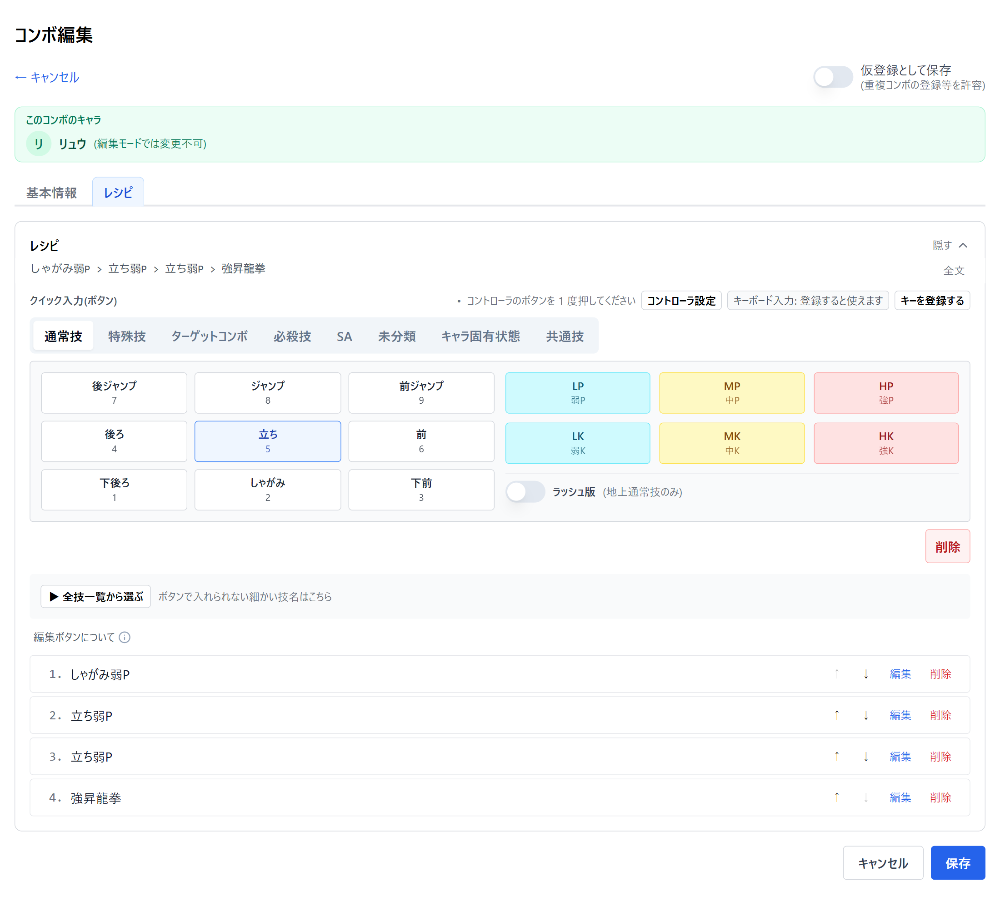
コンボに自分の分けかたで印をつけるための画面です。対戦相手のキャラクター別、練習の優先度、動画に使った／使っていない——何を軸にするかは自由です。
タグは利用者ごとに分かれます。同じ 1 本のコンボに、人によって違う印を付けられます。
共通ヘッダ、または設定から開きます。ここで作ったタグは、コンボ一覧の絞り込みとコンボ登録・編集のタグ欄に出てきます。
タグは登録・編集の画面からも新しく作れます。この画面は「あとから整理する」ための場所だと考えてください。
N 件 / 全 M 件」が出るので、絞った結果か元から無いのかが分かります。カテゴリと色は、一度決めると「未設定」には戻せません（別のカテゴリ・別の色には変えられます）。仕様であり、不具合ではありません。
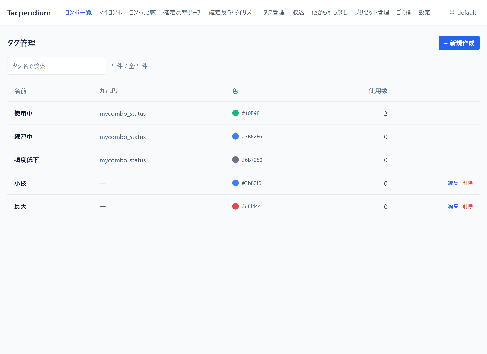
似たコンボを何本か並べて、どれを使うかを決めるための画面です。
コンボ一覧は「探すため」の表なので、出す項目を絞っています。こちらは逆で、記録してある項目をすべて、縦に揃えて出します。「ダメージは下がるがゲージを使わない」「起き攻めが 1 種類だけ増える」といった差を、見比べて判断するための画面です。
コンボ一覧かマイコンボで「比較/エクスポート対象選択」を入れ、いくつか選んでから比較ボタンを押します。
この画面の中の「コンボを追加」からも足せます。各列の見出しのいちばん下にある「詳細を開く →」からコンボ詳細へ進めます。
✕ です。✕ は「比較から外す」であって、コンボを消す操作ではありません。押しても表から抜けるだけで、データはそのまま残ります。起き攻めの出しかたがコンボ詳細とは違います。詳細は「そのコンボで使えるものだけ」を並べますが、比較では 12 通りすべてを行として並べ、使えるかどうかを ✓ と ✗ で出します。列を揃えて差を読むためで、意図的な違いです。
リンク・動画・画像の 3 行は、比較ではリンクになりません（文字として出るだけです）。押して開けるのはコンボ詳細だけです。
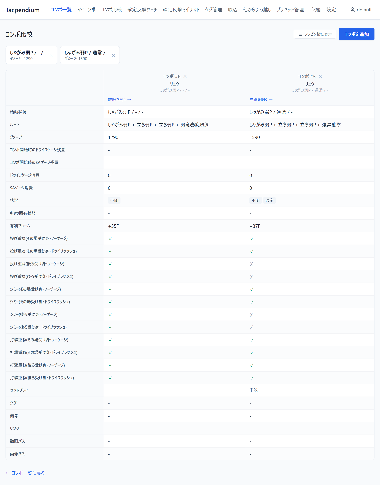
コンボのあとに続ける起き攻めや詰めの並びを、1 本の「型」として記録するための画面です。
セットプレイを別のものとして記録しておくと、起き上がりまでの有利が同じ他のコンボへそのまま使い回せます。同じ並びを何度も書かなくて済むように分けてあります。
コンボ詳細、またはコンボ登録・編集の「セットプレイ」から開きます。保存すると呼び出し元のコンボへ戻ります。
すでにあるセットプレイを元に作りたいときは、編集画面のヘッダにある「コピー」から始めます。
成立条件の 2×2 は、編集のときには出ません。あとから埋め直したいときは、そのセットプレイが紐づいているコンボの詳細から行います。
コピーしたあと、レシピを変えずに保存すると止まります。コピー先には同じレシピのセットプレイが既に紐づいているためで、名前を変えても止まります。コピーは「途中まで同じ並びを作る」ための機能なので、レシピに手を入れてから保存してください。
コピーで引き継ぐのは名前・説明・レシピの 3 つだけです。成立条件は引き継がず、すべて未検証から始まります。
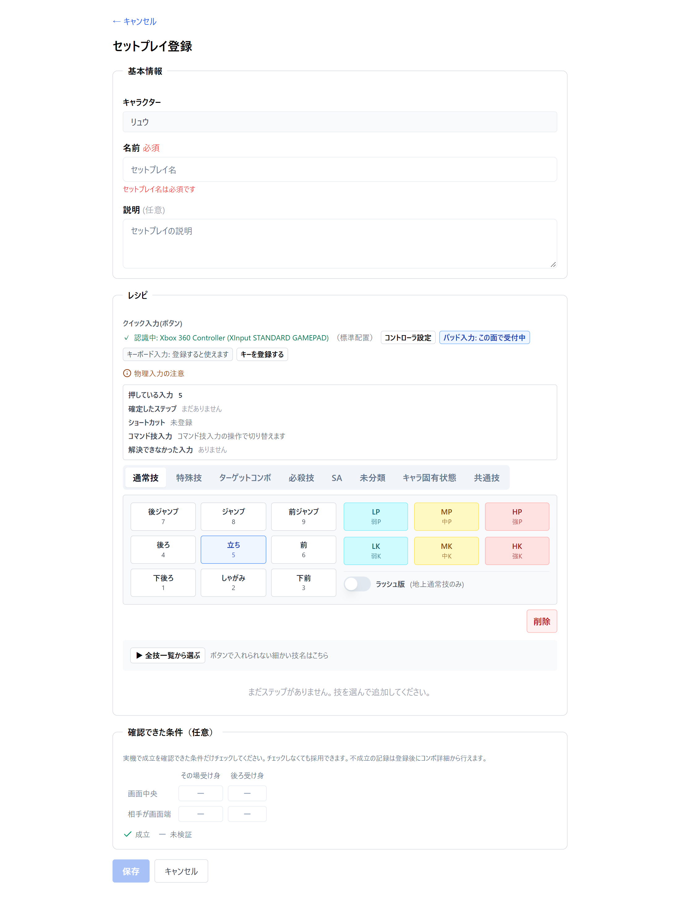
技の呼び名の組み合わせを選んだり、自分用のものを作ったりする画面です。
同じ技でも、人によって「中足」と呼んだり「しゃがみ中K」と呼んだりします。レシピの読みやすさは呼び名で決まるので、まとめて切り替えられるようにしてあります。呼び名を変えても、記録されているコンボそのものは 1 文字も変わりません。
設定の中のリンク、または共通ヘッダの「プリセット管理」から開きます。
自作のプリセットの行を押すとプリセット編集へ進みます。組み込みの行からはコピーして自作を作る操作になります。
プリセットは全部で 8 件までです（組み込みの 3 つを含みます）。画面には 3 / 8 のように現在の数が出ます。上限に達すると新規作成ボタンが押せなくなり、押せない理由もその場に出ます。
「使用する」で切り替えた呼び名はアプリ全体のレシピ表示に効きます。コンボ一覧・詳細・比較・書き出しのすべてが、選んだプリセットの呼び名で出ます。
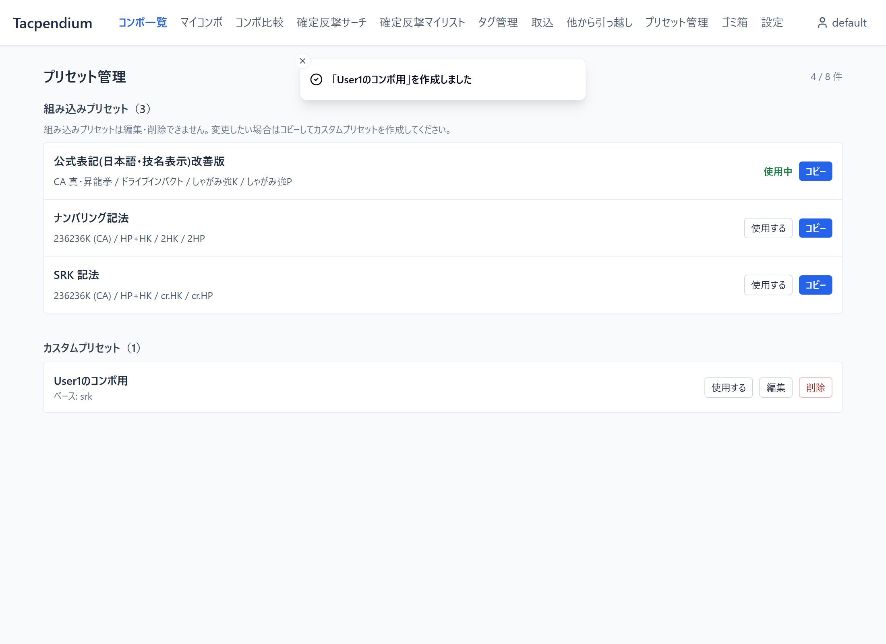
自作のプリセットの中身——技ごとの呼び名——を書き換える画面です。
「この技だけ自分の言いかたにしたい」という直しかたを想定しています。全部を書き換える必要はなく、触らなかった技はコピー元の呼び名のままです。
プリセット一覧で自作のプリセットの行を押すと開きます。保存すると一覧へ戻ります。
組み込みのプリセットを開くと、読み取り専用になります（その旨の案内が出て、入力欄はすべて無効になります）。直したいときはプリセット一覧からコピーして、自作のほうを開いてください。
この画面で変えられないものが 4 つあります——技と技のあいだの区切り記号／元にしたプリセットの名前／呼び名を決めていない技の表示のしかた／技そのものの追加と削除。いずれも設計として固定してあり、直せないのは実装が追いついていないためではありません。
同じ呼び名を 2 つの技に付けることはできません。保存したときに「どの表記が重なったか」が画面と応答の両方に出るので、その行を直してから保存し直してください。

記録したコンボをアプリの外へ出すためのダイアログです。
想定しているのは、SNS へ貼る・配信の画面に出す・表計算で見直す・別の PC へ移す、といった場面です。出す形式と出す項目を、そのときの用途に合わせて選べます。
コンボ一覧またはマイコンボのエクスポートボタンで開きます。画面が切り替わるのではなく、その場に重なって出ます。
対象は押した時点で選んでいたコンボです。1 つも選んでいなければいま絞り込んでいる全件が対象になり、ボタンの文言も「全 N 件をエクスポート」に変わります。画面に見えているものがそのまま出るようにしてあります。
クリップボードだけは、単独で選んだときしか使えません。ほかの形式と一緒に選ぶと最後の 1 つしか残らず意味がないためです。
複数の形式を選ぶと1 つの ZIP にまとまらず、別々のファイルとして順に落ちてきます。3 つ以上を同時に出すと、ブラウザ側が 2 つめ以降のダウンロードを止めることがあります。止まったときは形式を分けて実行してください。
ファイル名は同じ秒に 2 回出すと末尾に _2 が付きます。自動で入る名前は、開いたとき・対象や件数が変わったとき・実行したときに取り直されますが、自分で書き換えたあとは取り直しません。
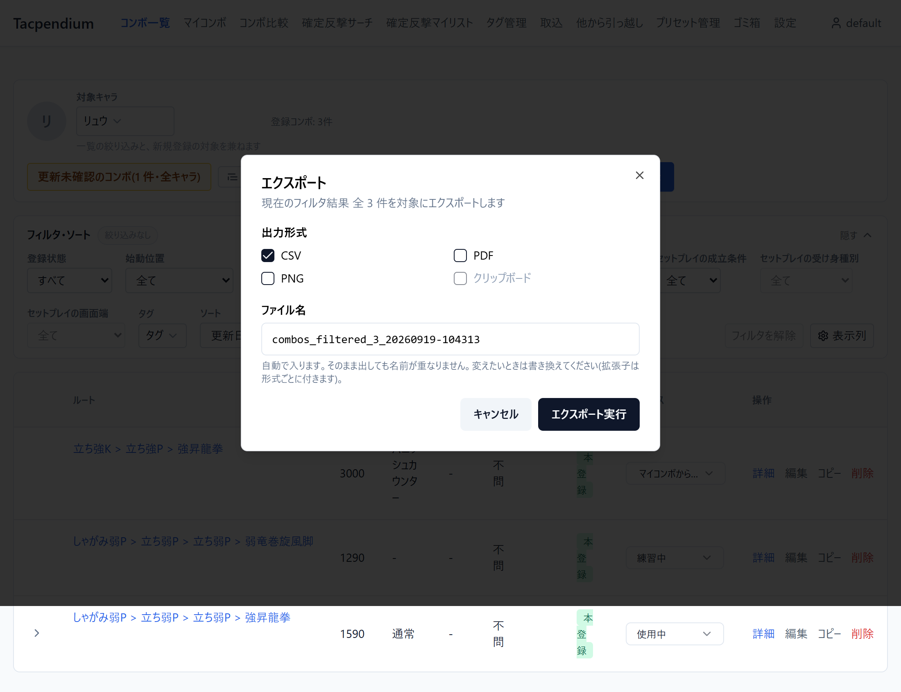
CSV ファイルを読み込んでコンボをまとめて登録するための画面です。
別の PC で作った記録を持ち込む、書き出しておいたファイルから戻す、他から引っ越しで作った CSV を取り込む——このいずれかで使います。1 本ずつ手で入れ直さずに済ませるための入口です。
共通ヘッダの取込から開きます。他から引っ越しから進んだときは、作られた CSV を持った状態で開き、そのまま自動でプレビューまで進みます。
取り込みを実行すると、その結果がこの画面に出ます。登録されたコンボはコンボ一覧から確かめられます。
チェックを入れるのはコンボの行だけです。セットプレイに個別のチェックはなく、親のコンボが取り込まれれば一緒に入ります。
セットプレイの表に出る親の解決可否（○ / ×）は、重複したときの動きを考えに入れていません。そのため「スキップ」を選んでいると、○ が付いていても実際には取り込まれないことがあります（親のコンボが重複でスキップされ、行き先が無くなるためです）。
「セットプレイのみ取込」を選ぶと、重複したコンボは飛ばしつつ、その配下のセットプレイだけを既存のコンボへ結びつけて取り込みます。同じレシピのセットプレイは名前が違っても飛ばされます。
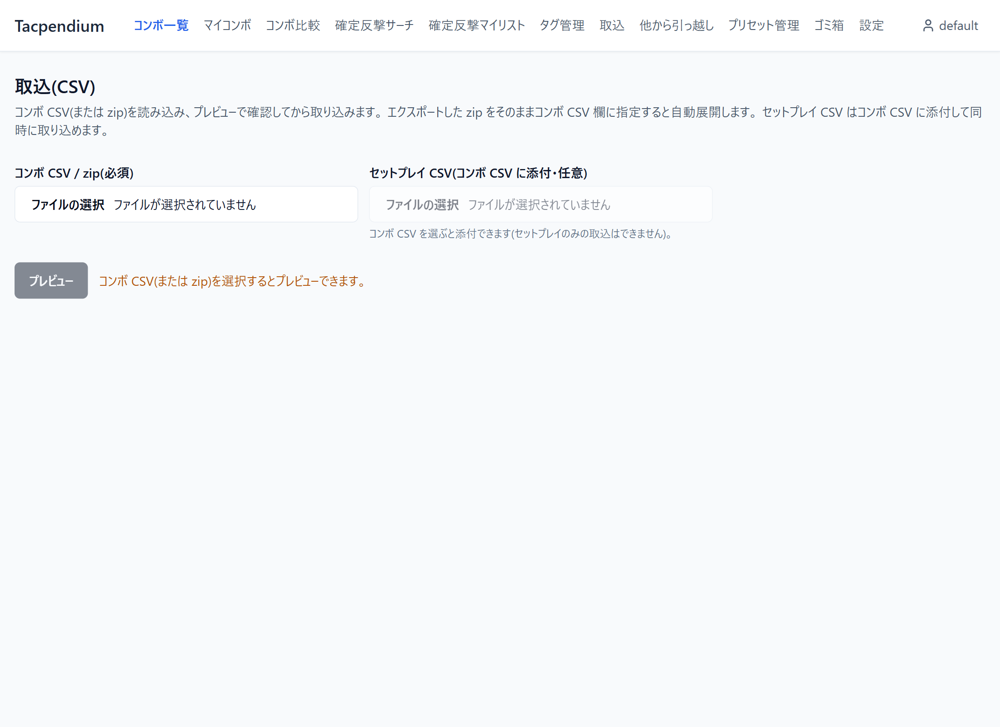
消したコンボ・セットプレイを戻すための画面です。
削除はすぐには本当に消さず、いったんここへ入れる形にしてあります。取り違えて消してしまったときに、記録が失われないようにするためです。期限はありません——放っておいても自動で消えることはないので、あわてて判断する必要はありません。
共通ヘッダのゴミ箱から開きます。行を押すと読み取り専用のコンボ詳細が開き、中身を確かめてから戻すかどうかを決められます。
コンボの表とセットプレイの表は別々に並びます（それぞれ独立した表です）。
並びは消した日時の新しい順です。コンボ一覧とは違う並びで、いま消したものがいちばん上に来ます。「さっき消したものを戻したい」が最もよくある用事だからです。
同じセットプレイが複数のコンボに紐づいていることがあります。その場合、ゴミ箱へ入れても紐付けは保たれ、戻すと紐づいていたコンボすべてに一斉に戻ります。
ただし例外が 1 つあります——削除するときのダイアログにあるチェック（既定は入っていません）を入れて消した場合だけ、そのコンボとの組み合わせ 1 つは戻ってきません。ほかのコンボとの紐付けは残ります。
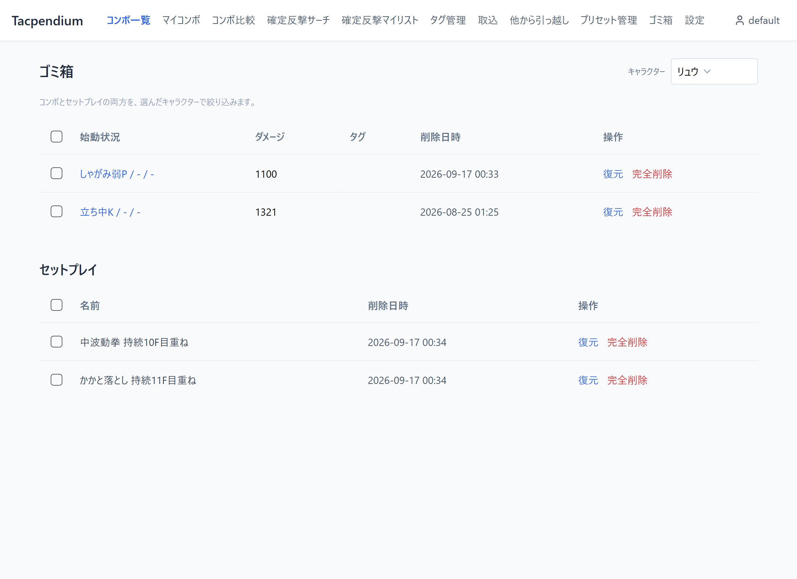
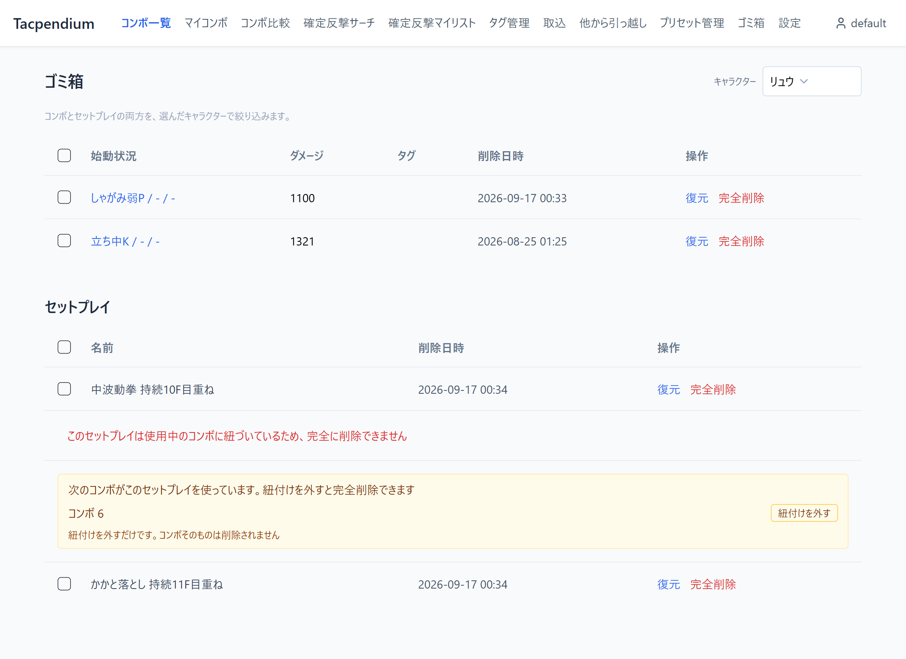
これまでほかのアプリ・メモ帳・表計算で管理していたコンボを、本アプリへ移すための画面です。
手で書いたコンボの表記は人それぞれで、機械にはそのままでは読めません。そこを「曖昧な表記を読み解くのは AI にやらせ、技を確定させるのはアプリがやる」という二段構えにしてあります。技の確定をアプリ側に残しているのは、AI に技を決めさせると、それらしいが違う技が混ざるからです。
共通ヘッダの他から引っ越しから開きます。作業は 2 段階です。
最後に CSV が作られ、取込の画面へそのまま渡されて自動でプレビューまで進みます。登録そのものは取込の画面で行います。
取り込むのは 1 キャラクターずつです。プロンプトには選んだキャラクターの技しか入らないので、キャラクターの取り違えが起きない作りになっています。
未解決の行が出ることは失敗ではありません。読み取れなかったものを無理に近い技へ寄せると、間違った記録が静かに残ってしまうため、あえて寄せずに人の判断へ回しています。
確信度に「低」や「?」が多く並ぶときは、AI が推測で埋めている疑いがあります。そのまま進めず、ステップ 1 の「書き方のコツ」に沿って手元の表記を整えてから、もう一度試すほうが早いことが多いです。
表しきれない書きかたがあります——ドライブラッシュ・OD・SA1〜3・ドライブインパクト・パニッシュカウンター・「×2〜3」のような回数・「/」による選択・条件付き。これらは読み取りの語彙に無いため、原理的に表せません。該当する部分は取り込んだあとにコンボ登録・編集で手を入れてください。
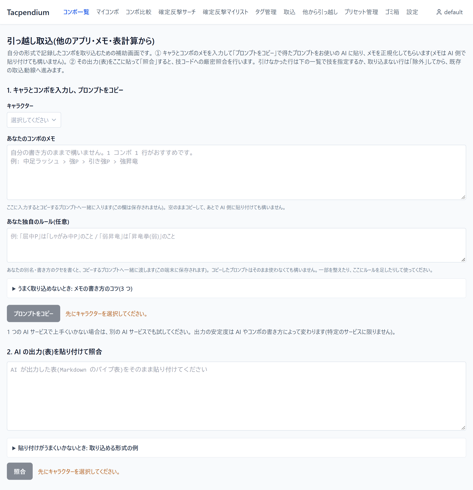
ゲームのアップデートで性能が変わった技を使っているコンボを並べて、直せるようにするための画面です。
大事なのは「影響があります」と告げることではなく、どの技が変わったのかを名指しで出すことです。技の名前が分からないと、どのコンボのどこを試し直せばよいか決められないためです。
技のデータが更新されると、ホーム（スマートフォン）とコンボ一覧（PC）の両方にお知らせの帯とボタンが出ます。そこから開きます。全キャラクターぶんをまとめて出します。
行の［編集］から直して保存すると、この画面へ戻ります。キャラクターごとに見出しと表が縦に並びます。
行の操作は［詳細］［編集］［削除］の 3 つで、コピーは出ません。コピーで生まれた行は「影響なし」の状態で作られ、元の行は影響ありのまま残ります。この画面の目的に対して何も進まない操作なので、あえて外してあります。
「更新未確認」の印が出るのはコンボ詳細だけです。コンボ一覧やマイコンボには出しません。この画面を開けば全部並んでいますし、件数はボタンが常に出しているためです。
一覧に出るのは1000 件までです。それを超えると、その旨の注記が出ます。また、件数が取れなかったときに「0 件」とは出しません——失敗したことがそのまま出ます。
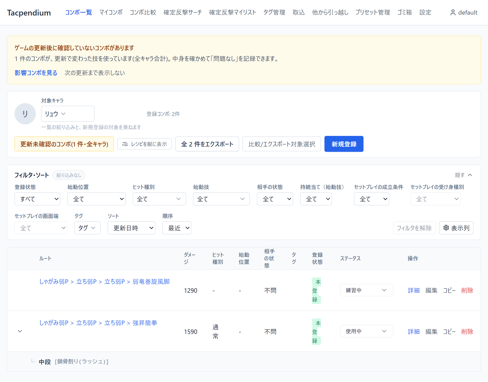
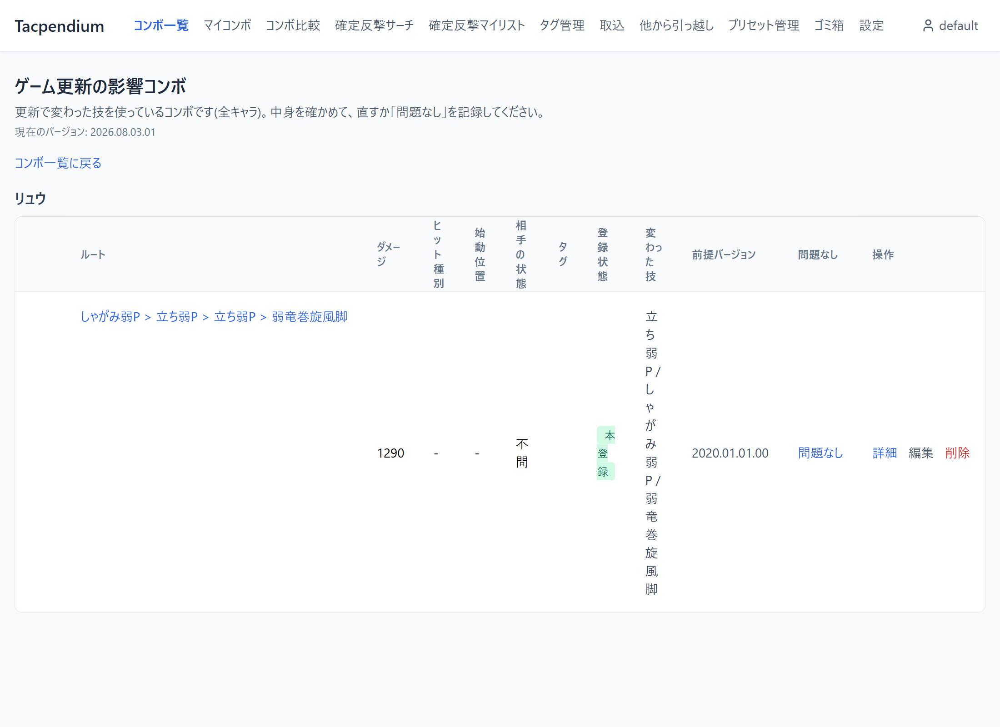
相手の技をガード、またはジャストパリィしたあとの有利フレームの中で始動できるコンボを探すための画面です。
「探して終わり」ではなく実際に試して距離まで確かめた結果を記録する作業場として作ってあります。フレームの上では成立しても、距離が離れていると届かないことがあるためです。確かめて採用したものだけが、次の章のマイリストへ並びます。
共通ヘッダの確定反撃サーチから開きます。自分のキャラクター・相手のキャラクター・ガードの種別（既定はジャストパリィ）を選ぶと結果が出ます。
選んだ条件は URL に入ります。よく使う組み合わせはそのままブックマークしておけます。
レシピの中の修飾は、この画面だけは札にならず {目押し} のような波括弧付きの文字のまま出ます。コンボ一覧や詳細とは見えかたが違いますが、中身は同じものです。
ダメージが 0 の技は候補に出ません。ダメージが入っていない技は「ダメージ不明」として手動確認の欄へ回ります。この 2 つは別の扱いです。
確定反撃版を作ると、元のコンボは候補からたたまれます。消えるのではなく「変換済み (N 件)」の折りたたみに入るので、そこから開けます。確定反撃版を消せば自動で戻ります。たたまれるのはこの画面の候補だけで、コンボ一覧や比較では今までどおりです。
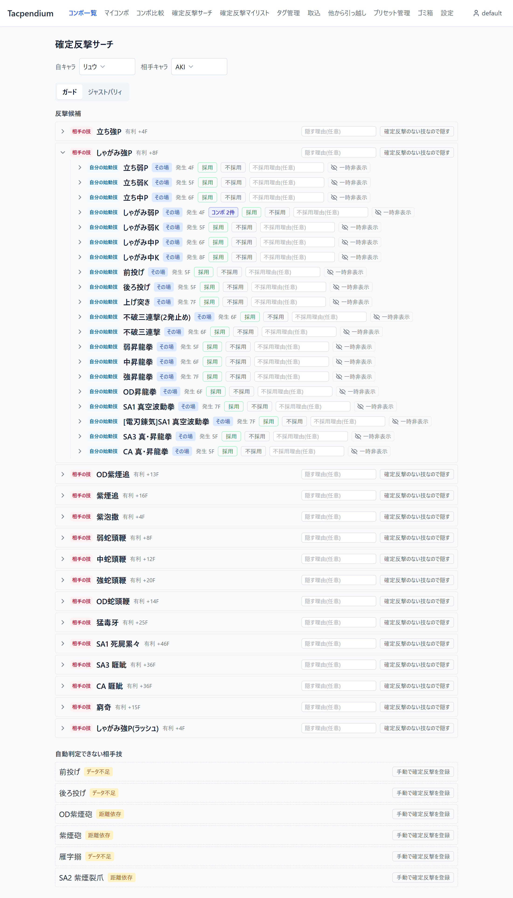
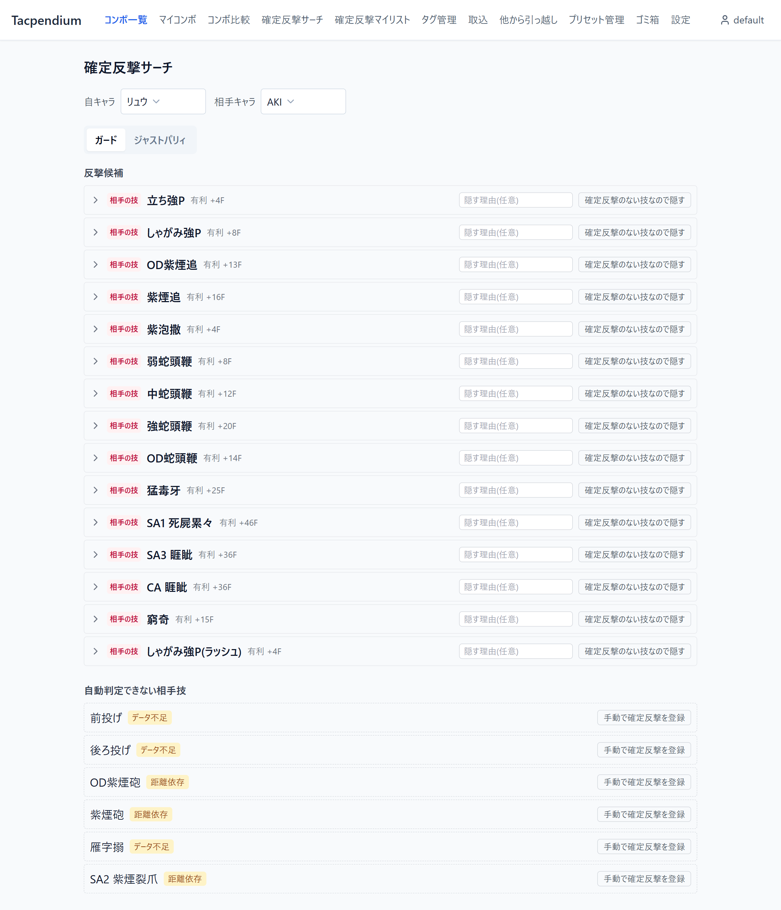
確かめて採用した確定反撃だけを見返すための画面です。
前の章の「探す」が試行錯誤の作業場なら、こちらは本番で使う持ち出し用です。相手技から引ける形にしてあるので、「この技をガードしたら何を返すか」を対戦の前に見返せます。
共通ヘッダの確定反撃マイリストから開きます。採用が 1 件も無いときは、探す画面への案内が出ます。
相手技 → コンボ の 2 段です（探す画面より 1 段浅くなっています。始動技で悩む段階は終わっているためです）。
タブは2 段です——〔マイリスト／隠したもの管理〕と〔ガード／ジャストパリィ〕。上の段を切り替えると下の段はそのまま残ります。
「パニッシュカウンター(インパクト)」は、名前にパニッシュカウンターと入っているのにこの欄へ出ます。仕様です（扱いをどうするかは別に検討されています）。未対応の取りこぼしではありません。
すでに確定反撃版を作ったものをたたんで残してあるのは、そこにしか「確定反撃の採用を解除」が無いためです。画面から外してしまうと、解除する手段が無くなります。
隠したものは相手キャラクターで絞られますが、ガードの種別では絞られません。ガードのタブでもジャストパリィのタブでも、隠したものは同じ顔ぶれが見えます。
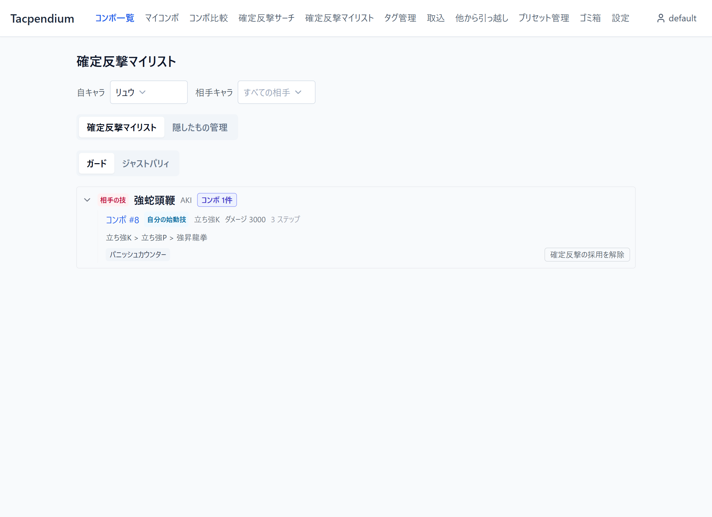
スマートフォンで開いたときの入口になる画面です。
小さい画面でメニューを探させないために、よく使う行き先を大きなボタンで縦に並べてあります。あわせて、最近さわったコンボへ直接飛べるようにしてあります。練習中に片手で開く場面を想定した画面です。
スマートフォンでアプリを開くと最初に出ます。PC・タブレットでは出ません——この画面を飛ばして、そのままコンボ一覧が開きます。
ボタンからコンボ一覧・マイコンボ・新規コンボ登録・コンボ比較・プリセット管理・設定へ進めます。
初回の案内は一度閉じると、次からは自動で出ません。読み返したいときは 設定 の「初回ガイドを見る」からいつでも開けます。PC から使いはじめた方も、そこから読めます。
技のデータが更新されたときのお知らせの帯は、この画面とコンボ一覧の両方に出ます。どちらから入っても気づけるようにしてあるので、同じ内容が 2 か所に出ていても重複ではありません。
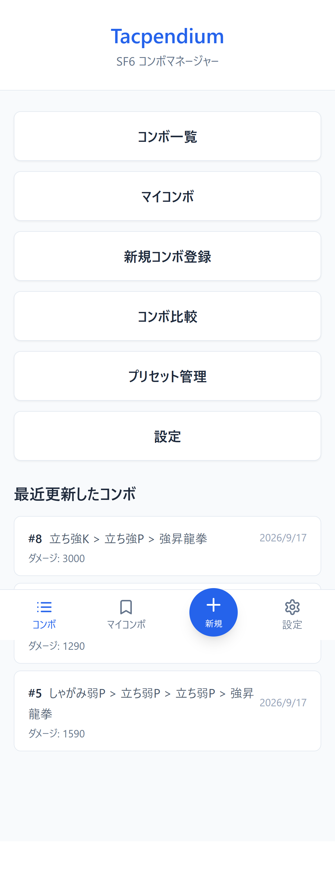